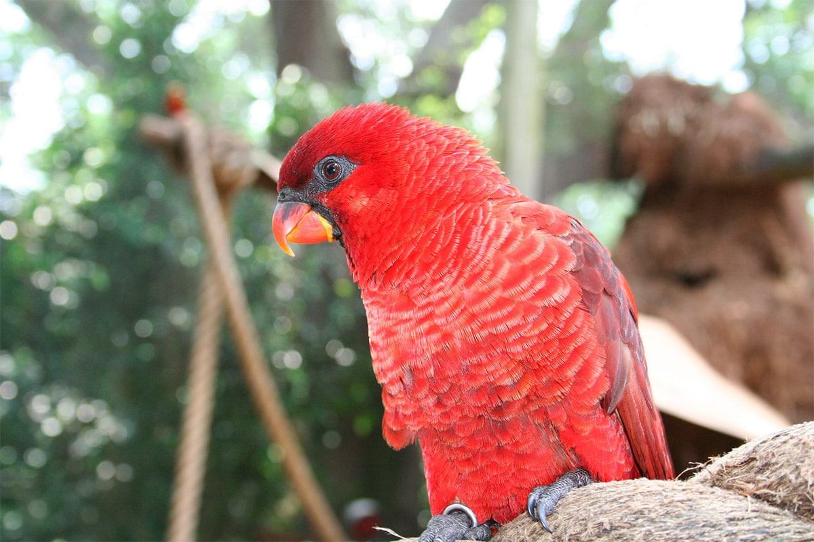

This lory has a characteristic silhouette due to its relatively long tail. In adults, no
sexually dimorphic, all plumage is showy red, but upperparts and wings
appear darker. The beak is orange-red with a black area at the base. Orbital bare skin is
also black. The feathers of the lower parts have small yellowish borders, which gives this part
a vaguely scaly appearance. The legs are grey. The iris is red-orange. The immatures have a back and
wing-coverts paler red. Their beak is dull orange with many small black markings.
Their orbital skin is whitish gray. Their irises are pale yellow.
Size: 31cm
Wingspan: -
Weight: 175 to 215 g
Order: Psittaciformes
Family: Psittaculidae
Genre: Pseudeos
Species: cardinalis
We have listed different kinds of calls, in particular a rather rough and harsh trill, but also a
"zheet-zheet" squeaky and distinctly louder and harsher than that of the Rainbow Lorikeet. We can
also hear more discordant, more strident and harsher notes.